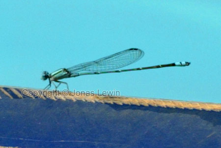
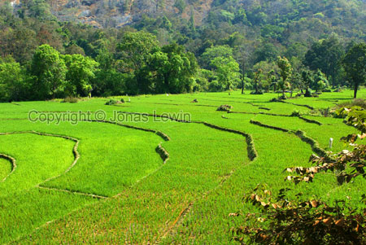

India leaves everyone full with impressions. It's the most different to western Europe that I have ever seen.
I didn't expect India to be that much of a 3rd world country that it really
is. So if you ever go there, be prepared for the following, and your trip
will be more enjoyable.
Daily power outs.
Dirt, in every possible way. Even while showering, you don't get as clean as
you would expect.
Rude, and annoying people. As a white person with blond hair, wearing shorts
and t-shirt, everyone will stare at you. The Indians will try to get your
attention, in much the same way that kids do.
Hot water is a luxury, and you can't get that everywhere (not even in many
hotels). Sometimes there is no water at all.
The toilets are not anything we are used to. It's a hole in best case.
Sometimes, they don't even have the hole.
Wastebaskets is not an invention that has reached the streets yet. The hotel
rooms where the only place I saw them.
If you are prepared for this, and all the annoying mosquitoes and lice, and you feel that you really want to visit India, then you will probably enjoy yourself there.
Remember that Goa is heaven in India. There is no other place in India that is as great. Goa is clean, quiet, calm, and the people are very friendly. So, just enjoy the quiet calm life of Goa, and the service that you get there. You can hear how quiet it is on this mp3 file.
Some other advices:
If you want to take the train somewhere, always try to get the best class
possible. The best class you can get is not as good as any normal train in
Sweden. The people in the more expensive class, are normally much less
annoying than the people traveling in the "normal" 3rd class. And always
bring toilet paper whenever you travel (as you have to in China as well).
Guard it with your life, or it will easily get stolen.
Speaking of stolen: Always use the hotel safety box for your money, so you don't experience what I did. A cleaner stole some money from a wallet (hidden well in our luggage). And the cleaner also managed to figure out the 6 digit code to my luggage, which means that it too was worthless to keep anything expensive in.
Take all of these warnings and hints serious, if you intend to go to India. Because India has some great landscape in Goa.
When I arrived at the hotel in Goa, everything seems great. Palm trees with coconuts, a nice pool, and close to the beach.
The trees where very nice, but the sea was quite dirty to swim in. It was not very cold in the pool, nor in the sea. So it didn't have the cooling effect that I was looking for in the heat.
Some days it was 38 degrees in the shadow.
Some
signs are just confusing. Does this sign refer to the
1) Wishing well to the right in the picture?
2) The hammock to the left in the picture?
3) To the pool behind me when I was taking the picture?
Some
dragonflies had the pool as their territory.
After
a few days we decided that we wanted to go to the Dudhsagar Falls. It was
famous for it's monkeys, and the fact that it was a very high waterfall.
On our way, we saw some really spectacular landscape, like this rice field.
What
we didn't realize before we went to the falls, was that we would spend a
long time in a 4 wheel drive jeep. As the road looks like this, for 10 km,
it took over one hour to reach the the destination.
The road was full of pits, and large stones, making it impossible to drive in any normal speed. When the jeep found a flat road, it accelerated to the amazing speed of 30km/h.
If we do some math: 10 km/70 min travel = average 8km/h. That will give you
some reference of how bad the road was.
Take
a few nuts in your hand, and close it. Then approach the monkeys. Then the
monkeys will open your hand, in search of the nuts, finger by finger.
When
they see that you don't have anything more in your hands, they go back to
their friends.
If
you hold on to the banana, they will fight for the food, until the banana
breaks. They are quite strong for their size.
They
keep on staring on you, to see if you will bring them anything that they can
eat. The only thing I saw them get was nuts and bananas.
It's
a quite high fall, in several steps. You can see the man in white standing
at the right of the picture.
After
visiting the waterfalls, we went to the "Tropical Spiceplantage". They had
much more than spices here.
This is a paradise bird, and has a very long nice tail.
Another
bird that's an expert in fishing.
Small
snake that the staff kept as some sort of a pet. They feed it to keep it
there.
Pineapple.
Looks very nice, and completely different to the ones we are used to. Of
course this is not ripe. We have to wait for a while for this to be eatable.
When I
was in Goa, there where very few tourists. So all the taxi drivers was
constantly asking if you wanted a ride somewhere. And they won't take no for
an answer. Perhaps the 10th time you tell them no, they will understand.
Just ignoring them works best, but I don't like to completely ignore people. However, this is what I had to do, to not be completely exhausted from saying no a few thousand times every day.
We mainly used a taxi driver that my brother had recommended, and after
trying a few others, we found out why my brother had recommended him. He was
driving like an 80 year old woman, compared to every other taxi driver. But
when we first had a ride with him, we thought he was driving like Mario
Andretti.
The
women where always very colorful in their dresses. And I managed to take a
picture of a very colorful bus (the best bus I ever saw in India).
Like China, there is never a single line when there is a queue. Everyone
wants to be first, which means everybody is trying their best to push away
anyone that is in their way.
And they can't wait for the passengers that are leaving the bus, so it's
always a chaos whenever the bus or train stops.
And
here's a great example if Indian ingenuity. I will not make any more
comments on this picture. I'll let you have a close look now.
 Cars
and Trucks have rear view mirrors, but nobody has ever understood what they
are there for. Instead you have to use your horn, whenever you want to pass.
In fact, you use the horn when telling a driver that it is safe to pass you,
and to tell him not to pass you. Meeting traffic also uses the horn to tell
you to get out of the way, as they want to use your lane to pass another
car.
Cars
and Trucks have rear view mirrors, but nobody has ever understood what they
are there for. Instead you have to use your horn, whenever you want to pass.
In fact, you use the horn when telling a driver that it is safe to pass you,
and to tell him not to pass you. Meeting traffic also uses the horn to tell
you to get out of the way, as they want to use your lane to pass another
car.
That's why this picture is so great. Most trucks and taxis has the letters "Please Horn OK" or "Blow Horn" printed at the back of the car. This guy has some extra "goodies". Just above the tires, he has printed "Good" "Luck".
The company "ASHOK" that is printed here as well, is a name of a company. It
makes Trucks, Loudspeakers, and some food. Versatile company.
The
market in Mapusa (pronounced "Mapsa") has many things to offer. Spices is
the only thing that I would ever consider buying here, as the rest of what
they sell is pure junk, and uninteresting things.
And,
yes. The cows. The cows in the traffic. To us, it's very very amusing to see
them walk around on the roads.
The local people don't think much of it. It's just another obstacle that has
to be passed, and very frequently they use the horn to tell the cow that
they will pass it.
The cow on the other hand doesn't seem to care about all the noise. After
all, they know that no car will ever hurt it. So they can even go to sleep
in the middle of the road.
Here
is India / Goa in a very concentrated form.
We have the electrical wiring.
We have the middle class person on his cycle from the mid 50's. Cars, tourist busses, and vespas in a constant battle to get from A to B in the shortest possible time, without getting hurt.
Palm trees, and old dirty buildings.
The sun is low, so it's not so hot. That's the time when everybody in India is out on the street it seems.
Posters and billboards everywhere.
Somewhat colorful Indian clothing.
The sundown lasts only a few minutes in Goa, and it always looks the same. No clouds, some haze, and a sun moving fast down.
On the beach some boys where playing soccer, and this was the only time I
saw anyone with a football. The rest of the people where obsessed with
Cricket. And the world cup was playing when we where there. So the Indians
where more obsessed than usual.
A
common way of transport. Cars and carriages are equally common.
When
we where going to a bird sanctuary by boat, the locals where going to work,
using the ferry in the opposite direction.
When we reached the shore, 2 cars and some vespas/mopeds where waiting to
get onboard the ferry. They where not enough, by far, people waiting there
to fill the ferry. But they all had to get on the ferry before everyone had
left the ferry. Why not wait 20-30 seconds for all passengers/cars to leave
the ferry, before rushing on. There was more than enough room for everybody.
They could even have their own bench to sit on. But it seems that rushing on
is their way. Just like small kids that cant wait for mom and dad, rushing
away.
On
the bird sanctuary, we where offered a tour around the island in canoes. And
the price should only be 500 rupeees (€10). So we decided to try it out.
It shows out to be a 1-1½ hour tour on a river, going up and down.
Anyway,
on the river we saw a quite big stork.
And
in the mangrove there where lots of crabs when the tide was low.
And
the river was full of small fish. Some of them where flying fishes, which
where very hard to capture on camera.
Among
all the palm trees, there are lots of other trees. Like mango trees. To us
these are exotic fruits. To them, It's just as plain as an apple, or a
potatoe.
The
Indians believe in the evil eye. So whenever they build a nice house, they
add something to take "the hit". The evil eye should first fall on a
different object than the actual house. That way the house will not be
cursed by the evil eye. And most things that they put up for the evil eye
looks terrible. Most often it's a dummy of a man that should be the victim
of the evil eye, just like on this picture.
On
the highway it seems that most signs are sponsored by Coca Cola. Underneath
all of the important signs is the logo of Coca Cola.
As
you see here, the fisherman can't catch that big fishes. But it's not the
big fishes he's after anyhow. It's the small fishes, and there are quite
many of them. He has his own net that he uses to try to catch them. If he is
lucky, he will get up to 1 kg that day.
From
young age the women learn how to carry heavy things on their head. To us it
looks very strange, but they don't seem to be tired from carrying it. So
this must be an effective system.
I guess that it also protects the head from direct sunlight, which is also one positive effect of this system.
Her family is fairly rich, as she has footwear.
This picture also displays the colorful clothing that most women wear.
Looking at her, and comparing her to the street kids that I saw in Agra, she should feel very fortunate.
And looking at the people in India, I feel very very fortunate in my life.
Sundown
in Goa. View from our hotel premises.
Sometimes you have pure luck with a photo. I'm talking about the large bird of prey that is flying next to the sun. I even didn't notice it when I was taking the picture.
This picture also demonstrates that you don't need a fancy camera to take nice pictures. I used my small pocket camera to take this photo.
Looking at this picture makes me realize that this sundown was much better
on the photo than in reality. 2 minutes after taking this shot, the sun was
gone. So you have to be fast to take sundown pictures in India.
Farewell India. You gave me very many new experiences. And I am determined
never to return.